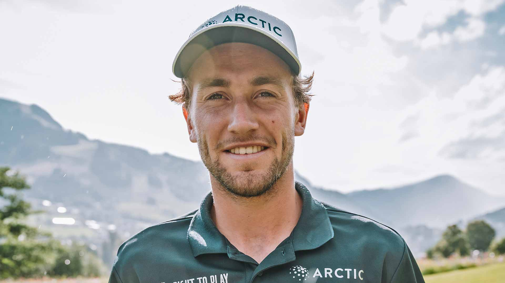

Nuestra historia
Nuestro club se funda en el año 1974 y desde entonces se ha convertido en el centro deportivo y social de nuestro barrio. A diario ponemos nuestro mejor esfuerzo para que todos ustedes encuentren un entorno ameno, saludable y seguro. A principios de los años 90, se amplía su superficie para ubicar dos pistas de pádel, se pone en marcha un nuevo gimnasio y se construye una pileta de natación. Seguimos teniendo muchos planes para el futuro, y esperamos poder contar siempre con ustedes para que nuestro club siga creciendo exitosamente.
Nuestros profesores
